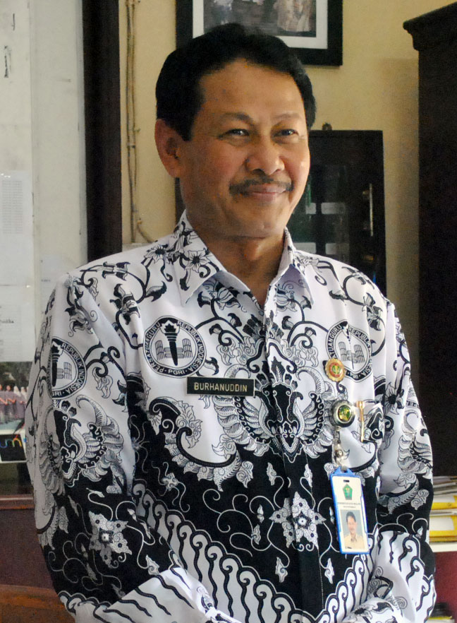

Sambutan Kepala Sekolah
Semoga aktivitas sehari-hari yang kita kerjakan selaras dengan kehendak Tuhan YME, sehingga sang Pencipta kita menilainya sebagai bentuk implementasi kebahagiaan atas nikmat yang diberikanNya. Mudah-mudahan syukur yang kita lesakkan benar-benar menemukan esensinya.
Di era global dan pesatnya Teknologi Informasi, tidak dipungkiri bahwa keberadaan sebuah informasi suatu intansi termasuk SMP Negeri 5 Malang sangatlah penting. Informasi sekolah ini dapat digunakan sebagai media penyebarluasan berita dari sekolah kepada netizen secara luas, agar tercapainya tujuan bersama dari lembaga ini.